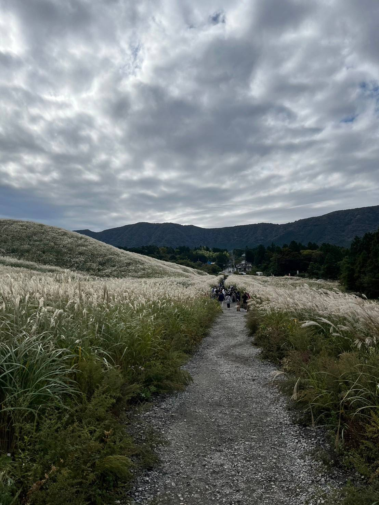

路上観察（10/6）
今日僕が路上観察で見つけたのは「チョコス」です。
この日、僕は友達の田村君と課題の写真探しに横須賀・三浦をうろうろしていたのですが、金田のあたり
を通っている時、最近少し話題になっていた（いや結構前かも）”ChoCos"を発見しました。
前情報がなくあまりよく知らなかったのですが、どうやらチョコスはどうやらコストコの独立した店舗ではなく,
第三者がコストコのビジネス会員として仕入れて販売位している店舗のようです。
気になったので実際に入ってみました。

※店内・店外の写真撮影およびHPへの掲載は直接定員さんから許可を得てます。
店内には、コストコのお馴染みの商品達はもちろん、商店松輪さんのオリジナルの食べ物なども販売していました。
実際に買ってイートインコーナーで食べてみましたがとても美味しかったです。
以上が一周目の課題でした！
10/13
この日僕が見つけたのは、tsunamiと言うドブ板通りのハンバーガー屋さんの看板（広告）です。
「The beast ボブサップ第七艦隊バーガーを食う！」このインパクトある広告が目に止まり、今回紹介することにしたのは、
ドブ板通りにあるtsunamiさんです。横須賀では割と知ってる人の多いハンバーガー屋さんで、僕も知っていたのですが、
お店の前まで来たのは初めてでした。今回は用あってお店には入れなかったのですが、機会があれば入ってみたいです。
以上が二週目の課題でした！
10/20
この日僕が見つけたのは、見慣れないローソンの看板でした。
この日、友達の田村くんと箱根に遊びに来ていたのですが、そこでこの見慣れないローソンの看板を見つけました。
ローソンの看板といえば、青白が普通ですが今回見つけたのは茶色いローソンでした。どうやら、このローソンが
茶色いのは、景観条例に対応するためのようでした。このローソンがあるのは、箱根の仙石原のススキ草原の近くで
あったため納得でした。

以上最後の課題でした！